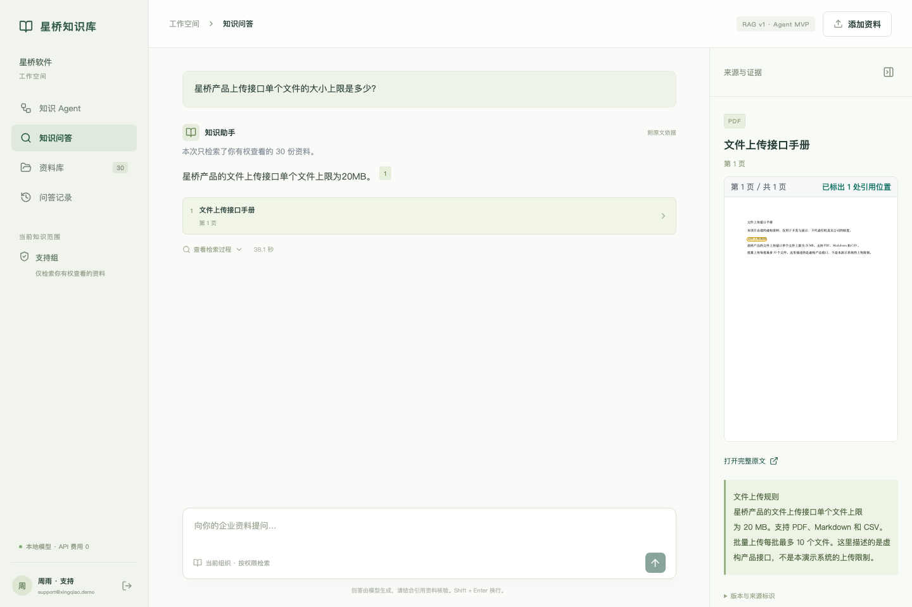
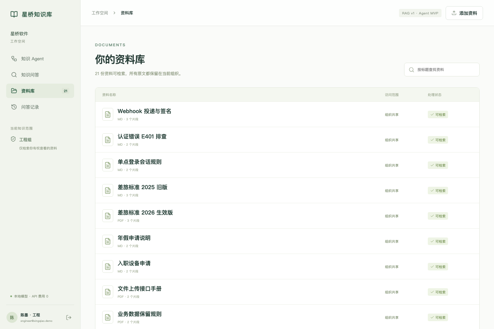
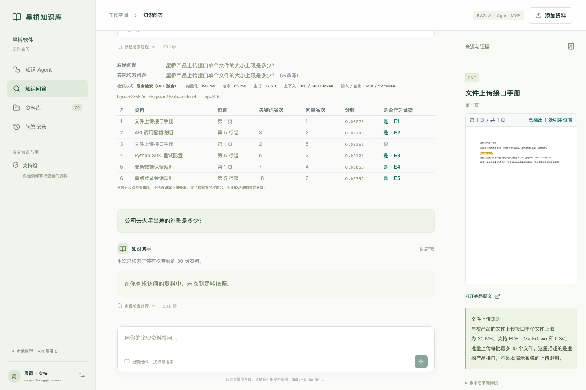
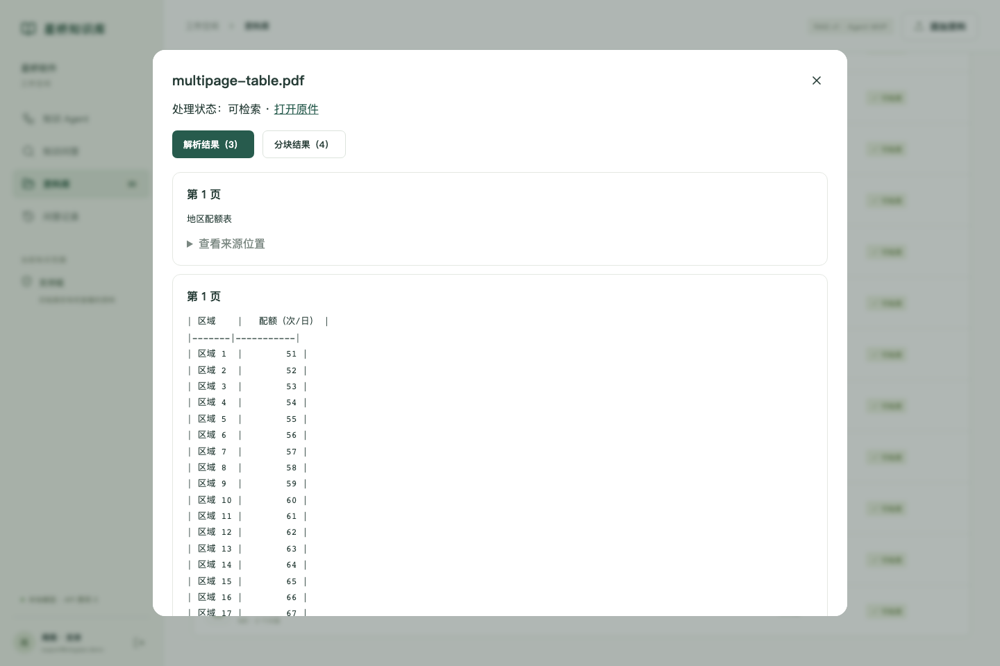
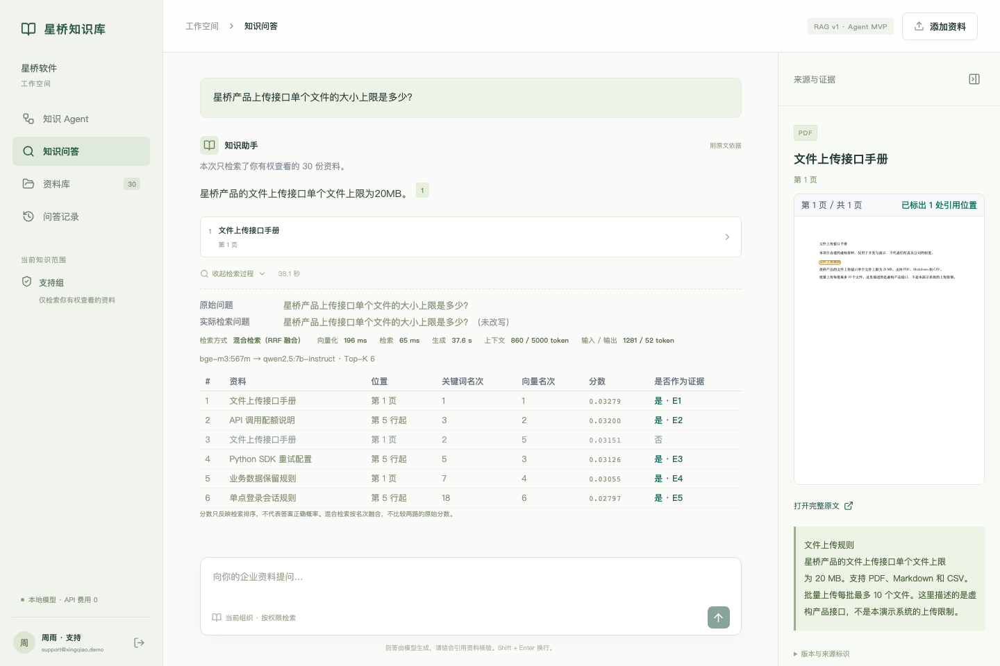

Enterprise AI · RAG + Agent
只用你有权看的资料回答，每句话都能找到原文Answers only from documents you may read — every claim traced to its source
面向企业内部知识库的问答系统：按用户权限检索，回答逐句附原文出处（PDF 页码与高亮、Word 段落、Excel 单元格），资料不足时拒答，两份资料矛盾时报告冲突；撤权立即生效。上层 Agent 把复杂问题拆成多步查证，每一步的工具调用都可审计。A question-answering system for internal enterprise knowledge. It retrieves only what the user is authorized to read, cites the exact source for every claim (PDF page and highlight, Word paragraph, Excel cell), refuses when evidence is insufficient and reports conflicts instead of picking a side. Revoked access takes effect immediately. An Agent layer breaks complex questions into auditable, multi-step lookups.
- FastAPI
- LangGraph
- PostgreSQL
- OpenSearch
- BGE-M3
- Qwen2.5 7B
- Ollama
- React · TypeScript
在线试用连接作者本机运行的完整系统（访客账号只读、每日限额）；机器离线时无法访问，可先看下方截图。演示以虚构公司「星桥软件」运行，界面中的「星桥知识库」是它的工作空间，全部资料均为虚构。The live demo connects to the full system running on the author's machine (read-only visitor account, daily quota). It is unavailable when that machine is offline — see the screenshots below. The demo runs as a fictional company, Xingqiao Software, so the UI shows its workspace name 星桥知识库 (Xingqiao Knowledge Base); all documents are fictional.

越权命中：所有已运行的评测（含 80 题冻结留出集）中，无一次返回无权查看的资料Unauthorized hits across every evaluation run so far, including the 80-question frozen holdout
个受控工具：Agent 不能直接访问数据库或索引，每次读取都重新鉴权Bounded tools: the Agent never touches the database or index directly; every read is re-authorized
题统一评测包：Dev 47 / Core 70 / Security 16 / External 150，运行前冻结配置Tasks in the unified benchmark (Dev 47 / Core 70 / Security 16 / External 150), configurations frozen before runs
自动化测试（2026-10-08 实际运行；另 36 项需本机服务，未计入）Automated tests actually run on 2026-10-08 (36 more need local services and were skipped, not counted)
产品演示Product demo
三个最能说明问题的界面Three screens that show what matters
截图来自一份可执行的浏览器走查（make browser）：它对着系统真实操作并断言每一步应展示的内容，结束时清理自己上传的资料。点击图片可放大。Screenshots come from an executable browser walkthrough (make browser) that drives the real system, asserts what each step must show and cleans up its uploads. Click to enlarge.
回答可回到原文Every answer leads back to the source
点开引用，PDF 打开对应页面并画出高亮框。Opening a citation jumps to the PDF page and draws the highlight box.

没有权限就看不到No permission, no visibility
换成另一个组的账号，私有资料完全不可见，详情接口返回 404。Switch to another group's account and the private document disappears; its detail endpoint returns 404.

没有依据就拒答No evidence, no answer
问一个资料里没有答案的问题，系统明确拒答，引用为空。Ask something the documents do not answer: the system refuses explicitly with no citations.
再看两张：上传解析与检索调试Two more: upload parsing and retrieval inspector

上传一份多页表格 PDF，处理完成后变为可检索，可逐页查看解析结果与分块。Upload a multi-page table PDF; once processed it becomes searchable and its parsed pages and chunks can be inspected.

检索调试页：检索方式、两路名次，以及哪些候选真正进入了模型。Retrieval inspector: retrieval mode, rank in each path, and which candidates actually reached the model.
系统架构Architecture
模型只做语言工作，权限、版本和引用由程序把关The model handles language; code enforces permissions, versions and citations
问答（单轮 RAG）Q&A (single-pass RAG)
追问按规则补全上下文后直接检索与生成。Follow-ups are completed by rules, then retrieved and answered directly.
Agent 任务（异步）Agent task (async)
立即返回 queued，后台 worker 以数据库租约领取执行。Returns queued at once; a background worker claims it with a database lease.
编排：固定 Workflow / Hybrid / Planner / DynamicOrchestration: fixed Workflow / Hybrid / Planner / Dynamic
默认走确定性 Workflow，下一步依赖中间结果时走有界 Hybrid；官方检查点支持中断恢复，累计调用预算由业务层保存。Defaults to the deterministic Workflow, or the bounded Hybrid when the next step depends on an observation; official checkpoints allow resumption while cumulative call budgets stay in the application.
search_documentsretrieve_evidenceopen_documentget_document_versioncompare_versionsverify_chunk_accesssearch_memory权限过滤的混合检索Permission-filtered hybrid search
授权范围写进查询，BM25 与 BGE-M3 向量两路用 RRF 融合。Authorization is part of the query; BM25 and BGE-M3 vectors are fused with RRF.
Qwen2.5 7B · Ollama
模型只能引用带编号的证据片段，不能自己写出处。The model may only cite numbered evidence spans; it never writes a source itself.
引用校验与再鉴权Citation check and re-authorization
服务端取回原文核对数值、版本与权限；不通过最多局部修复一次，否则判定失败。The server re-reads the source to check values, version and access; one bounded local repair, otherwise the answer fails.
文档、版本、ACL、任务与工具审计、LangGraph 检查点。决定可见性的是这里，而不是搜索索引。Documents, versions, ACLs, tasks, tool audit and LangGraph checkpoints. Visibility is decided here, not by the search index.
关键词与向量索引；新版本先建索引再发布，切换失败不影响当前版本。Keyword and vector index. A new version is indexed before it is published, so a failed switch never affects the live version.
核心能力Key features
四件企业场景里绕不开的事Four things enterprise knowledge cannot skip
权限进检索，不做事后过滤Permissions inside retrieval, not after it
授权范围是检索查询的一部分，返回前再校验一次。先检索再过滤，意味着敏感资料已经进过排序和生成链路。The authorized scope is part of the query and is checked again before returning. Filtering afterwards would already have sent sensitive text through ranking and generation.
引用可核验，核验不过就不返回Verifiable citations, or no answer
服务端取回真实原文，核对数值、单位、版本与权限后才组装引用；不通过时最多局部修复一次，仍不通过就判定失败。The server fetches the real source and checks values, units, version and access before assembling citations; one bounded repair, then the answer fails.
撤权立即生效Revocation takes effect immediately
撤权提交后的下一个请求就被拒绝，不等索引清理；引用了失权资料的历史记录连提问文本一起隐藏。The next request after revocation is denied without waiting for the index. History entries citing revoked documents are hidden, question text included.
冲突要拿出证据Conflicts need evidence
模型必须交出分属两份文档的两段矛盾原文，系统才报告冲突。加这道门槛前冲突判定精确率只有 4.2%，之后在 147 题开发集上为 11/11。A conflict is reported only when the model produces two contradicting passages from two different documents. Precision was 4.2% before this gate and 11/11 on the 147-question dev set after it.
评测Evaluation
先冻结配置，再看结果Freeze first, then measure
RAG、Workflow、Dynamic Agent 与 Hybrid 统一用一套评测包比较。只允许在 Dev 上调参；Core 的方法与消融矩阵在第一次运行前注册冻结，看到结果后不能补配置。主指标是 Core 70 题的严格任务成功率：事实完整、条件与版本正确、引用支持、该拒答时拒答、执行安全，全部满足才算通过。RAG, Workflow, Dynamic Agent and Hybrid are compared on one benchmark package. Tuning is allowed only on Dev; the Core method and ablation matrix is registered and frozen before its first run. The headline metric is Strict Task Success on the 70 Core tasks: complete facts, correct conditions and versions, supported citations, correct refusals and safe execution must all hold.
唯一允许调参的部分The only split used for tuning
七类各 10 题 · 7 categories × 10 · 待正式运行not yet run
组权限、跨租户、撤权、版本范围Group, tenant, revocation, version scope
MultiHop-RAG 固定子集，已用过，只作外部回归Fixed MultiHop-RAG subset, already used — regression only
Core 正式结果出来之前，本页不给出项目总体正确率。下面是 2026-09 阶段的历史实验，题集与口径不同，只用于说明当时的工程决策。Until the Core run is complete this page reports no overall accuracy. The results below are September 2026 experiments with different task sets and scoring; they explain past engineering decisions only.
历史 · 冻结留出集 80 题（只运行一次）History · frozen holdout, 80 questions (run once)
| 指标Metric | 运行前门槛Pre-set target | 实测Measured |
|---|
“回答状态正确率”只看该答、该拒、该报冲突的判断是否正确，不等于答案内容的语义正确率；内容层面以字面事实覆盖为准。"Answer-state accuracy" only checks whether the system correctly answered, refused or flagged a conflict; it is not semantic answer correctness. Content is measured by literal fact coverage.
历史 · 检索方式对比（自建开发集 147 题）History · retrieval comparison (147-question dev set)
| 检索方式Retrieval | Recall@5 | MRR@10 | 回答状态正确率Answer-state acc. |
|---|
混合检索的检索指标低于 BM25，端到端却最高：证据只有 4 个位置时，关键是谁占了这 4 个位置。差异未达统计显著（McNemar p = 0.19），因此只能说“实测最优”。Hybrid retrieval scores below BM25 on retrieval metrics yet best end-to-end: with only four evidence slots, what matters is who occupies them. The difference is not significant (McNemar p = 0.19), so it is "best measured", not "proven better".
历史 · 英文外部子集 39 题History · English external subset, 39 questions
| 检索方式Retrieval | Recall@5 | 回答状态正确率Answer-state acc. |
|---|
英文语料加 100 份干扰文档。这里混合检索的检索优势明显，与自建语料上的排序相反，提示 BM25 的领先可能来自自建资料的专有名词特征。同一运行的字面事实覆盖率接近 0，因此“回答状态正确率”不代表答案内容正确。English corpus with 100 distractor documents. Hybrid retrieval clearly leads here, the reverse of the in-house ranking, suggesting BM25's lead may come from proper nouns in the in-house corpus. Literal fact coverage in the same run was near zero, so answer-state accuracy does not mean the answers were correct.
工程取舍Engineering decisions
三个被数据否决的常见组件Three common components rejected by the data
Cross-encoder 重排Cross-encoder reranking
Recall@5 从 0.935 升到 0.968，端到端几乎不变（p = 0.79），冲突精确率从 100% 降到 92.3%，耗时增加约 22%。已实现，默认关闭。Recall@5 rose from 0.935 to 0.968 while end-to-end barely moved (p = 0.79); conflict precision fell from 100% to 92.3% and latency rose about 22%. Implemented, off by default.
LLM 查询改写LLM query rewriting
四组对照中，不给历史的 LLM 改写与完全不改写的追问召回相同（0.65）；收益来自对话历史本身。最终采用零模型调用的规则拼接（0.975）。Across four arms, LLM rewriting without history matched no rewriting on follow-up recall (0.65); the gain came from the history itself. A zero-call rule-based rewrite was kept (0.975).
主题一致性校验Topic-consistency check
为拦“答非所问”而实现。校准发现判对回答的重合度 5 分位是 2，判错的无一低于 3：阈值只会误杀正确答案。已完整回退。Built to catch off-topic answers. Calibration showed the 5th percentile overlap of correct answers was 2 while no wrong answer fell below 3: the threshold could only reject correct answers. Fully reverted.
这套系统还不能证明什么What this project does not yet show
- 没有总体正确率：Core 70、Security 16 与 External 150 尚未正式运行。No overall accuracy: Core 70, Security 16 and External 150 have not been formally run.
- 审核不是独立人工：题目与答案由模型审核并如实标注；独立人工标签为 0。Reviews are not independent human labels: tasks and answers are model-reviewed and labeled as such; independent human labels: 0.
- 复杂推理仍弱：困难英文题的否定方向与整体结论常出错；Agent 还不能稳定利用中间结果决定下一步。Hard reasoning is still weak: negation and overall verdicts on hard English questions often fail; the Agent cannot yet reliably use intermediate results to choose its next step.
- 本机算力受限：本地 7B 模型解码约 8 token/s，Dev 47 题的 P95 为 78–87 秒；单机单进程，未做压测。Local compute: the local 7B model decodes about 8 tokens/s and the Dev 47 P95 is 78–87 s; single machine, no load testing.
- 语料与格式：全部资料为自建虚构内容；不支持需要 OCR 的扫描件与 PPTX，无文字层的 PDF 会明确报错而不是被索引成空文档。Corpus and formats: all documents are fictional; scanned PDFs needing OCR and PPTX are unsupported, and a PDF without a text layer fails explicitly instead of being indexed empty.